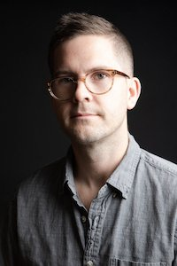
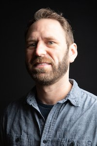

Our Story
We started line upon line in 2008, in part, because working with composers on new work was/is our favorite thing to do as a musicians. In fact, working with composers and getting to know them as people is very likely why we’re still in music at all. Line Upon Line was created out of the desire to spend meaningful time with composers, grow community, and try to help pieces be the best they can be.
Adam Bedell
Adam Bedell, a native Michigander, is the head of percussion studies at Texas Lutheran University (TLU) and Huston-Tillotson University. At TLU, he oversees the percussion studio, directs the Percussion Ensemble, and teaches percussion at the TLU Summer Music Academy, Texas' longest running summer music camp for middle and high school-aged students. Adam maintains an active orchestral career with the Mid-Texas, Round Rock and San Antonio symphonies, among others, and is a dedicated freelance musician, composer, and instrument builder. Bedell can be heard on the Grammy-nominated album Conspirare in Concert on the Harmonia Mundi label.
Bedell holds a Master’s in Music from The University of Texas at Austin, and a Bachelor's in Music from Central Michigan University having studied with Thomas Burritt, Tony Edwards, Andrew Spencer, and Jason Lewis.
Cullen Faulk
Cullen Faulk has performed with various Austin groups and artists including Graham Reynolds, Tom Burritt, Panoramic Voices, Austin Chamber Music Center, Ballet Austin, Salvage Vanguard Theater, and Peter Stopschinski; and can be found in the Austin bar-scene from time to time, backing bands with such inspired names as Genuine Leather and Grapes and Friends.
Matthew Teodori
Matthew Teodori founded line upon line percussion in 2009 and currently serves as its full-time Extecutive Director. He taught percussion at Southwestern University in Georgetown, TX from 2014 - 2021. He has performed with the Austin Symphony, Buffalo Philharmonic, Conspirare, ELISION, Inversion Ensemble, Mid-Texas Symphony, New Orchestra of Washington, Panoramic Voices, Roomful of Teeth, Southern Tier Symphony and the Victoria Bach Festival Orchestra.
Teodori received his Doctoral and Master's degrees from The University of Texas at Austin and his Bachelor's degree from Houghton College having studied with Dr. Thomas Burritt, Tony Edwards, Chip Ross and Jim Tiller.
Matt loves to ride his bike uphill and cook. He grew up in Richmond, VA, calls Austin home, but longs for mountains and cool weather. His favorite people on the planet are his wife, Natalie, and two kids, Zeke and Renata.